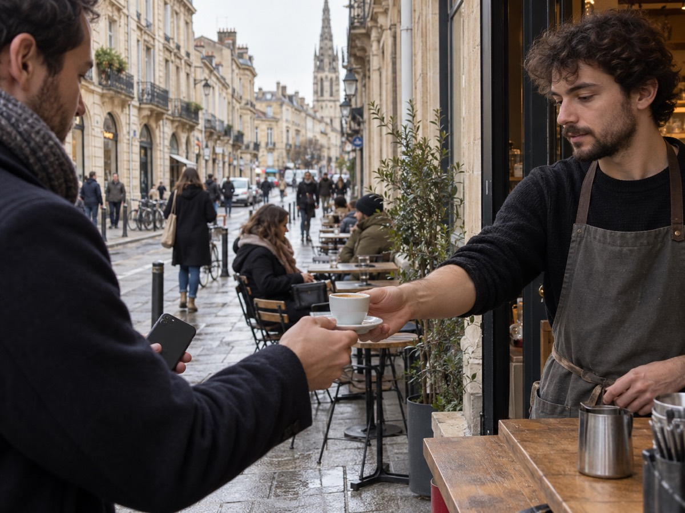
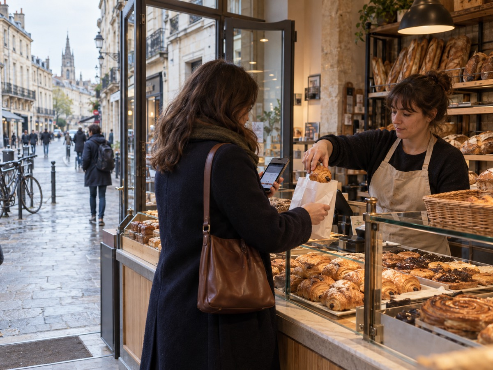
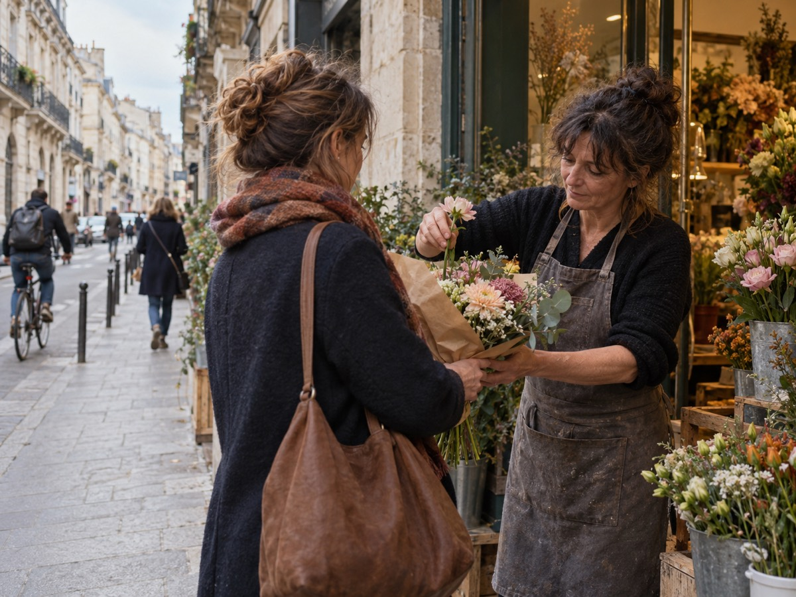

Le client rejoint le programme.
Il scanne le QR code du commerce. Le parcours cible lui propose ensuite de conserver sa carte dans le Wallet de son téléphone.
On revient là où l’on se sent reconnu. FIDELITIZ est né ici pour aider les commerces de quartier à faire vivre ce lien, avec une fidélité numérique simple, rapide et accessible.

Le client garde sa carte. Vous reconnaissez chaque visite. La relation continue, simplement.
Il scanne le QR code du commerce. Le parcours cible lui propose ensuite de conserver sa carte dans le Wallet de son téléphone.

À chaque visite, l’équipe lit le QR code de la carte affichée sur le téléphone du client. Les points ou passages sont ajoutés au bon compte.

Nous étudions aussi le passage par NFC. Cette option nécessite un lecteur compatible et sera validée avec les bêta-testeurs.
Côté client
Camille retrouve ses points et le QR à présenter en caisse.

Côté professionnel
La carte reconnue dans le scanner, puis l’activité suivie sur ordinateur.

Après le scan, Camille est reconnue et le montant est saisi.
La matinée démarre bien.
La vue d’ensemble affiche les chiffres du programme.
Un café, une douceur, une attention particulière : chaque commerce choisit la façon de remercier ses habitués.
Chaque visite rapproche le client de sa récompense.
Vous fixez les règles et le palier à atteindre.
Café, douceur ou attention : vous choisissez.
Chaque achat peut créditer un montant à utiliser chez vous.
Préparez et programmez des notifications push pour vos fidèles : récompense débloquée, nouveauté ou petit mot. Leur affichage est simulé dans la démo.
Essayer dans la démoLes achats font gagner des points. Une fois le palier atteint, le client profite du café que vous lui offrez.

Vous choisissez le nombre de passages. À son retour, une habituée reçoit sa viennoiserie au comptoir.

La récompense prend la forme qui vous ressemble : ici, une fleur ajoutée au bouquet d’une cliente fidèle.

Nous sommes une jeune équipe bordelaise. Les commerces indépendants méritent les outils utiles des grandes plateformes — carte, points, passages, retours clients — sans leur complexité.
La bêta est gratuite. Vos retours nous aident à retirer des clics, accélérer les gestes en caisse et bâtir un prix plus juste. Le produit avance avec celles et ceux qui l’utilisent.
Parlons de votre commerceRenseignez votre entreprise, on s’occupe de vous contacter pour parler de la bêta gratuite.
Vous préférez nous écrire ? bonjour@fidelitiz.fr
Votre demande a bien été envoyée. Notre équipe vous contactera rapidement.